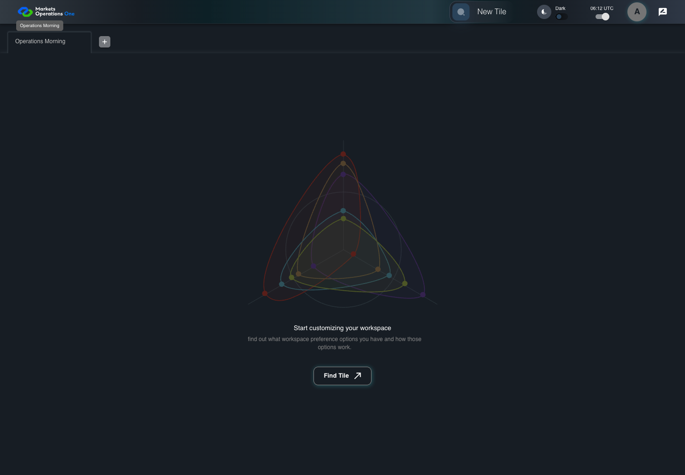

UI-SHL-009 rename workspace and show exact tooltip
PASS · application/run-050/ui-shl-009-rename-workspace-and-show-exact-tooltip-f890cecec19e-attempt-1 · ACTUAL_APPLICATION_LOCAL_SERVICES
Actual current MFE; controlled accepted login, validation, and activity renewal; unsigned fixture JWT; explicit stored workspaces. No real identity, server authorization, or backend persistence verification.
2026-10-22T06:12:08.910Z to 2026-10-22T06:12:11.688Z
Assertions and result · Artifact manifest · Exact run inputs and source hashes
Result SHA-256:4f8ebab2c73edb23ac904be6c48bf6a18f77a27d7f39c0e1147e0b179d973403Machine observations
- stored-workspace-setup.json
6913c8e8f3d7c67d187b9b5c1e329a61d683aca9a055e8f93de40e9d034f1ab8
Screenshot capture: CAPTURED. Named frames: 7.
Step screenshot evidence: COMPLETE. 6/6 canonical steps have execution screenshots.
Canonical step timeline
Given User A is authenticated as fixture UI-USER-01 with the case-specific permissions
Execution: PASSED.
1. step-01 Visible state after step 1: Given User A is authenticated as fixture UI-USER-01 with the case-specific permissions
2026-10-22T06:12:10.391Z · 1440×1000
Step: /Users/lushevol/code/github/ratan-release-impact/workbench/tasks/ui-test-coverage-20261022/test-cases.md:5651
SHA-256:b0d8bd3f9faf25b9831e8e67fc0e92f9f9cff7591bb746b16bfcb116162ff137And the Workspace Name input for W1 has focus
Execution: PASSED.
2. step-02 Visible state after step 2: And the Workspace Name input for W1 has focus
2026-10-22T06:12:10.509Z · 1440×1000
Step: /Users/lushevol/code/github/ratan-release-impact/workbench/tasks/ui-test-coverage-20261022/test-cases.md:5652
SHA-256:2805a7b7196abb19211a00297f6dbc2f866491276ae0babf6d31fa96a72a4427When User A replaces the value of textbox named "Workspace Name" inside the W1 workspace tab with "Operations Morning"
Execution: PASSED.3. step-03 Visible state after step 3: When User A replaces the value of textbox named "Workspace Name" inside the W1 workspace tab with "Operations Morning"
2026-10-22T06:12:10.625Z · 1440×1000
Step: /Users/lushevol/code/github/ratan-release-impact/workbench/tasks/ui-test-coverage-20261022/test-cases.md:5653
SHA-256:ccc77ba68dd7678b0d5f6939177906f64cb31189de97b201b2c9b06e37d97308Then textbox named "Workspace Name" inside the W1 workspace tab has value "Operations Morning"
Execution: PASSED.
4. step-04 Visible state after step 4: Then textbox named "Workspace Name" inside the W1 workspace tab has value "Operations Morning"
2026-10-22T06:12:10.684Z · 1440×1000
Step: /Users/lushevol/code/github/ratan-release-impact/workbench/tasks/ui-test-coverage-20261022/test-cases.md:5654
SHA-256:ccc77ba68dd7678b0d5f6939177906f64cb31189de97b201b2c9b06e37d97308When User A hovers over tab with source identity "Workspace Name textbox value Operations Morning" inside the shell tablist named "workspaces"
Execution: PASSED.
5. step-05 Visible state after step 5: When User A hovers over tab with source identity "Workspace Name textbox value Operations Morning" inside the shell tablist named "workspaces"
2026-10-22T06:12:10.836Z · 1440×1000
Step: /Users/lushevol/code/github/ratan-release-impact/workbench/tasks/ui-test-coverage-20261022/test-cases.md:5655
SHA-256:ccc77ba68dd7678b0d5f6939177906f64cb31189de97b201b2c9b06e37d97308Then the tooltip with text "Operations Morning" for the renamed workspace tab is visible
Execution: PASSED.
6. step-06 Visible state after step 6: Then the tooltip with text "Operations Morning" for the renamed workspace tab is visible
2026-10-22T06:12:10.917Z · 1440×1000
Step: /Users/lushevol/code/github/ratan-release-impact/workbench/tasks/ui-test-coverage-20261022/test-cases.md:5656
SHA-256:ccc77ba68dd7678b0d5f6939177906f64cb31189de97b201b2c9b06e37d97308
Additional named frames

The final visible state after the named test assertions.
2026-10-22T06:12:11.077Z · 1440×1000Step: Test source: /Users/lushevol/code/github/ratan-release-impact/workbench/e2e/audit-specs/workspace-edges.spec.ts:62
SHA-256:
268b290eae3a278667235ed634f3225f33476e2002bc8b1de0b7136546469b01Screenshots establish visible state only. Assertions and traces support functional claims.